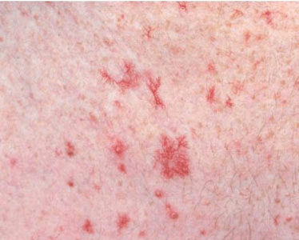
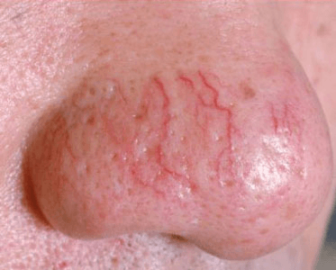

Telangiectasia is a condition in which widened venules (tiny blood vessels) cause threadlike
red lines or patterns on the skin. These patterns, or telangiectases, form gradually and often
in clusters. They’re sometimes known as “spider veins” because of their fine and weblike appearance.
Telangiectases are common in areas that are easily seen (such as the lips, nose, eyes, fingers,
and cheeks). They can cause discomfort and some people find them unattractive. Many people choose
to have them removed. Removal is done by causing damage to the vessel and forcing it to collapse
or scar. This reduces the appearance of the red marks or patterns on the skin.
While telangiectases are usually benign, they can be a sign of serious illness. For example,
hereditary hemorrhagic telangiectasia (HHT) is a rare genetic condition that causes telangiectases
that can be life-threatening. Instead of forming on the skin, telangiectases caused by HHT appear
in vital organs, such as the liver. They may burst, causing massive bleeding (hemorrhages).

